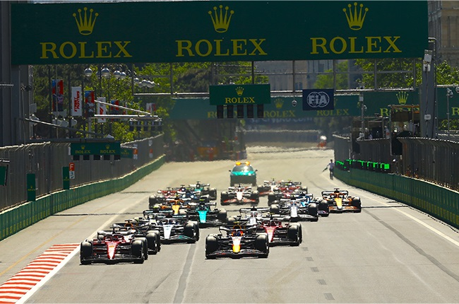

A rapper writes and performs rap music, often to highly stylized and rhythmic beats.You can only become famous if your music is popular, which means people need to be able to listen to it. Before you get sign to a label or release a record, exposure online can be an early springboard towards success
Only the top 10 drivers get points for the race! If you are in the top ten and have the fastest lap you get an additional point.
A safety car is a car that is used to slow down the pace of a race when there is a hazard on the track. This can be due to an accident, debris on the track, or bad weather conditions. The safety car is driven by a professional driver and is equipped with flashing lights and a yellow flag to indicate to the drivers that they must slow down. When the safety car is deployed, all of the drivers must line up behind it and remain at a certain distance from it. The drivers are not allowed to overtake each other or race each other while the safety car is on the track. The safety car will remain on the track until the hazard has been cleared and it is safe for the race to resume.
Qualifying is a session that takes place before a Formula 1 race to determine the starting order of the cars. Qualifying is divided into three parts: Q1, Q2, and Q3. In Q1, all 20 cars take to the track and have 18 minutes to set their fastest lap times. The five slowest cars are eliminated at the end of Q1. In Q2, the remaining 15 cars have 15 minutes to set their fastest lap times. The five slowest cars are eliminated at the end of Q2. In Q3, the remaining 10 cars have 12 minutes to set their fastest lap times. The driver with the fastest lap time will start the race on pole position, with the other drivers following in order of their lap times.
A pit stop is a pause in a race for a driver to change tires, make repairs, or make mechanical adjustments. Pit stops are an essential part of racing, as they allow drivers to maintain their car's performance and safety throughout a race. Pit stops are typically very quick, with the fastest pit stops taking under two seconds. This is due to the fact that pit crews are highly trained and practice pit stops extensively. Each member of the pit crew has a specific role, and they work together in a choreographed manner to ensure that the pit stop is completed as quickly and safely as possible.